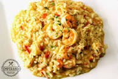
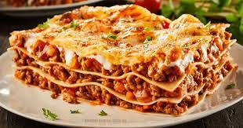

PRATOS MAIS FAMOSOS DO NOSSO MENU
Risoto de Camarão
- 400 g de camarão cinza limpo
- 1 cebola média picadinha
- alho
- 2 dentes de alho amassados
- margarina
- 2 colheres de sopa de margarina
- arroz arbóreo
- 1 xícara de arroz arboreo
- 2 envelopes de caldo de camarão
- 1 colher de sopa rasa de requeijão cremoso
- 50 g de queijo provolone ralado (ralo grosso)
- noz-moscada
- 1 pitada de noz-moscada
- sal
- Sal a gosto
- limão
- Suco de 1 limão
- 1 taça de vinho branco de boa qualidade
- 1 litro de água (aproximadamente)
Modo de preparo : 30min Em um recipiente tempere o camarão com metade do alho, sal a gosto e o suco de limão - deixe temperar por uns 10 min. Depois em uma frigideira (ou panela mais aberta) frite com a metade da cebola e 1 colher de margarina por uns 5 minutos (reduzindo a água que soltar). Reserve.
Leve ao fogo uma caneca com água e o caldo de camarão - pode deixar ferver. Em uma panela de fundo grosso frite em 1 colher de margarina o restante da cebola e do alho, adicione o arroz arbóreo, sal a gosto e frite um pouco, despeje o vinho branco, deixe evaporar o alcool. Após isto, adicione aos poucos a água com o caldo de camarão e vá mexendo sempre. Não deixe que seque totalmente, este arroz deve conter um pouco do caldo.
Antes que o arroz esteja totalmente cozido (o interessante é que não fique totalmente cozido) acrescente o requeijão cremoso e o queijo provolone ralado, mexa para incorporar e junte o camarão e a noz moscada. Tampe a panela por alguns instantes e sirva. Se desejar decore como na foto com mussarela ou com camarões maiores.
LASANHA DE CARNE MOÍDA
- Ingredientes (15 porções)
- 500 g massa de lasanha
- 500 g de carne moída
- 2 caixas de creme de leite
- 3 colheres de manteiga
- 3 colheres de farinha de trigo
- 500 g de presunto
- 500 g de mussarela
- sal a gosto
- 2 copos de leite
- 1 cebola ralada
- 3 colheres de óleo
- 1 caixa de molho de tomate
- 3 dentes de alho amassados
- 1 pacote de queijo ralado
modo de preparo
Modo de preparo : 50min 1 Lasanha Cozinhe a massa segundo as orientações do fabricante, despeje em um refratário com água gelada para não grudar e reserve. 2 Molho à bolonhesa Refogue o alho, a cebola, a carne moída, o molho de tomate, deixe cozinhar por 3 minutos e reserve. 3 Molho branco Derreta a margarina, coloque as 3 colheres de farinha de trigo e mexa. 4 Despeje o leite aos poucos e continue mexendo. 5 Por último, coloque o creme de leite, mexa por 1 minuto e desligue o fogo. 6 Montagem Despeje uma parte do molho à bolonhesa em um refratário, a metade da massa, a metade do presunto, a metade da mussarela, todo o molho branco e o restante da massa. 7 Repita as camadas até a borda do recipiente. 8 Finalize com o queijo ralado e leve ao forno alto (220°), preaquecido, por cerca de 20 minutos.